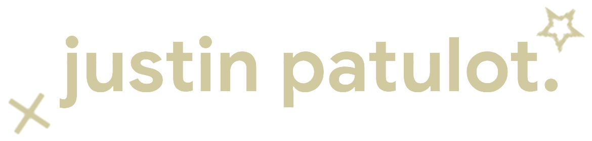
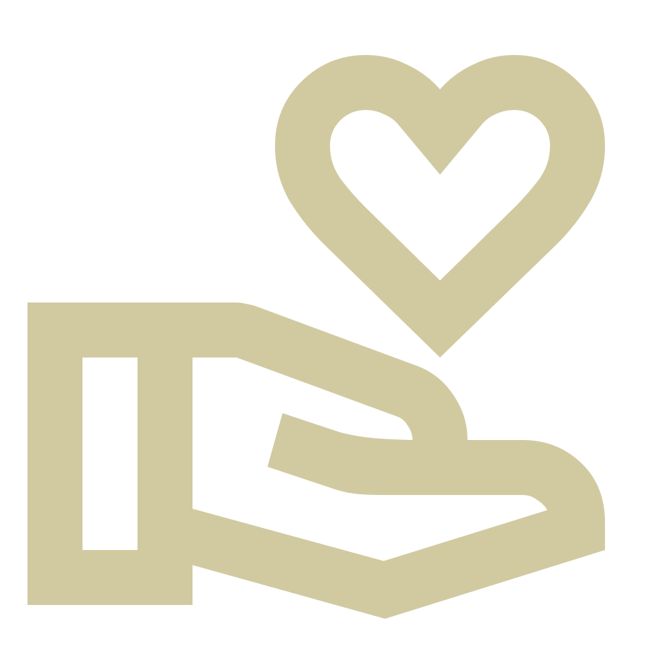
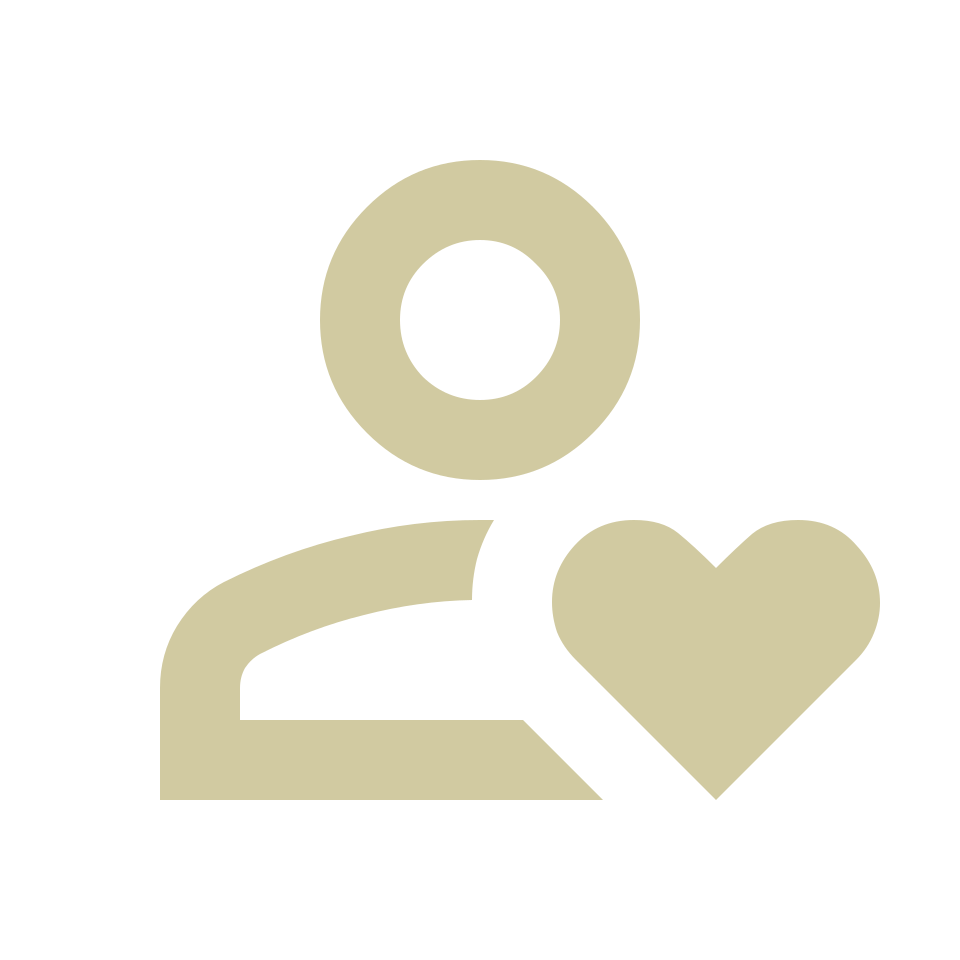
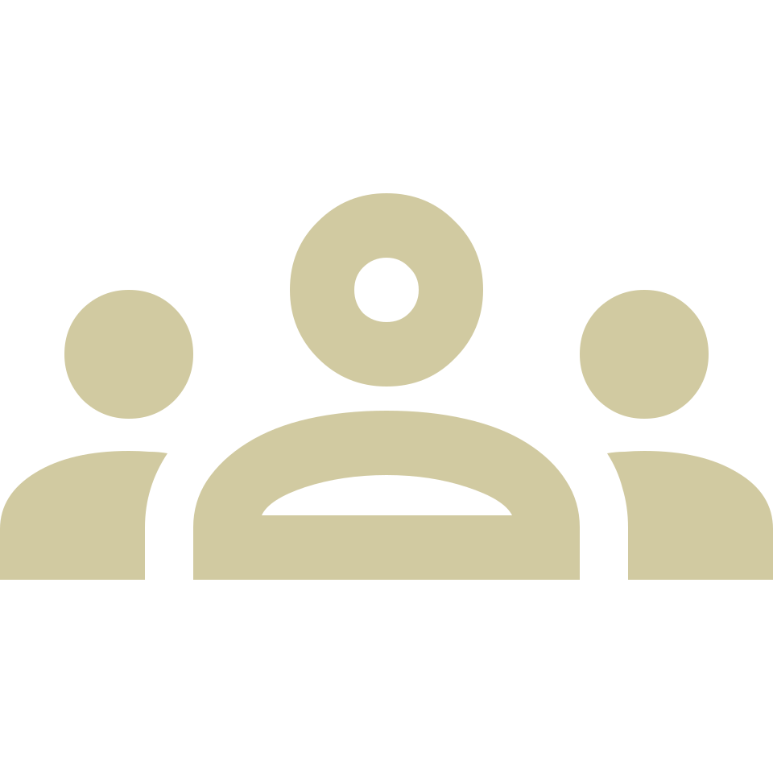
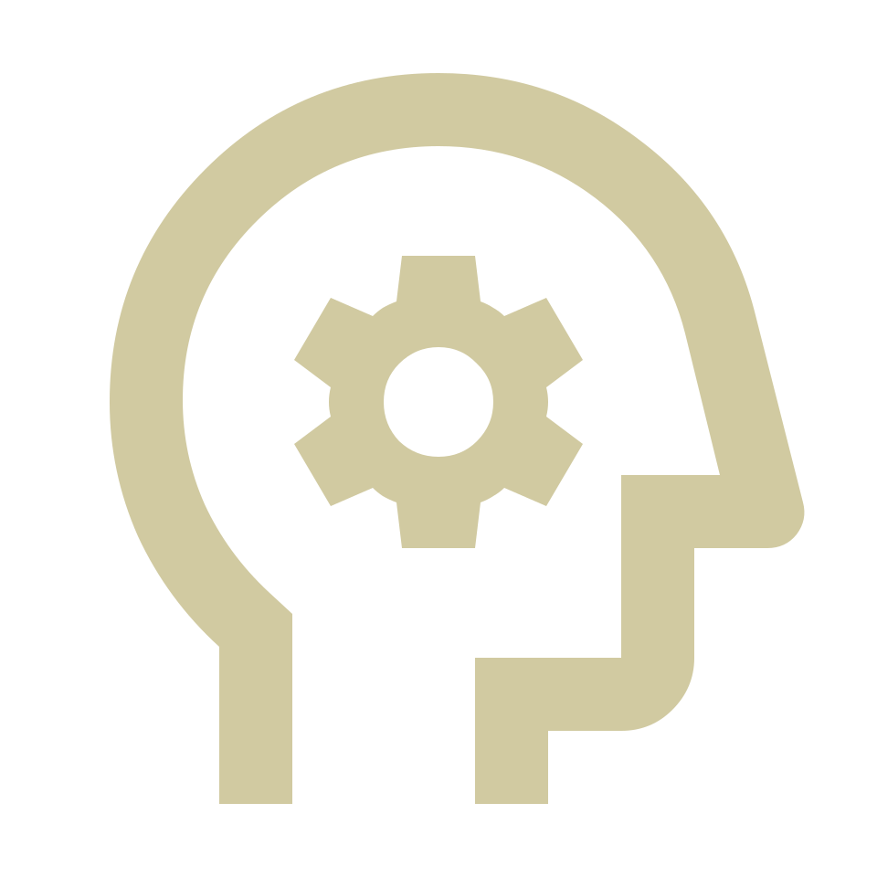
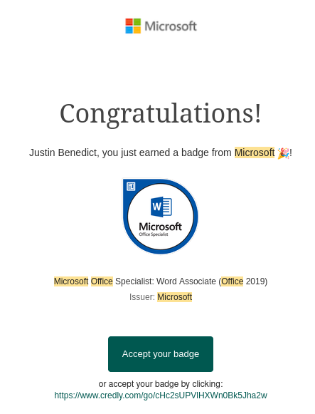

2026-onwards
CIIT College of Innovation and Integrated Technology
BSCS - Web and Mobile Development

PART A / QUALIFICATION PORTFOLIO
My background, strengths, and milestones.
01 /
I’m an aspiring web developer aiming to contribute to the open-source community and help make the world a better place with innovation.
I believe that systems and websites should benefit not only the tech industry, but society and the world as a whole.
Quirky? Nerdy? Weird? (not in the bad way), that's me! I love talking about music technicalities and open source projects, even if they are vibecoded.
One meaningful exprience I have experienced that shaped my belief that innovation should service the people is from being active in open source messaging platforms with majority of them helping me discover the wonders of open source community projects that benefits the people.
02 /
2026-onwards
BSCS - Web and Mobile Development
2024-2026
TVL-ICT
03 /
MY STRENGTHS

kindness Doing favors and good deeds for others.• Like empathy, I try to do as much good actions I can as it also makes me feel good.

love Valuing close relationships with others.• I feel close to people who approach me and still value our relationships after a falling out.
• Learning things im interested into is easy task for me.
MY WEAKNESSES
• Finishing what I start is genuinely super hard for me as I tend to get distracted alot, even a slight noise, I will be distracted at.

leadership• Encouraging a group and leading them is something I am utterly bad at, organizing things, terrible, assigning roles, horrid.

perspective• Being able to provide wise counsel to others is something I find so hard to do as I myself can't even give myself any wise counsel to improve my mentality.
04 /
2026
Passing the entrance exam meant a lot to me because CIIT has been my dream school since I first heard about it.
2026
I graduated from senior high school at Dr. Yanga's Colleges, Inc.
2025
I received this Microsoft badge in 2025.
